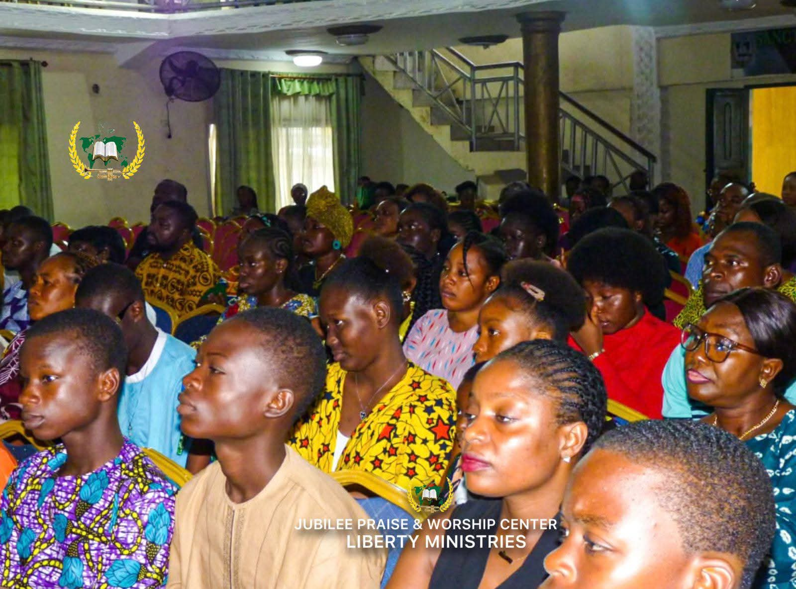
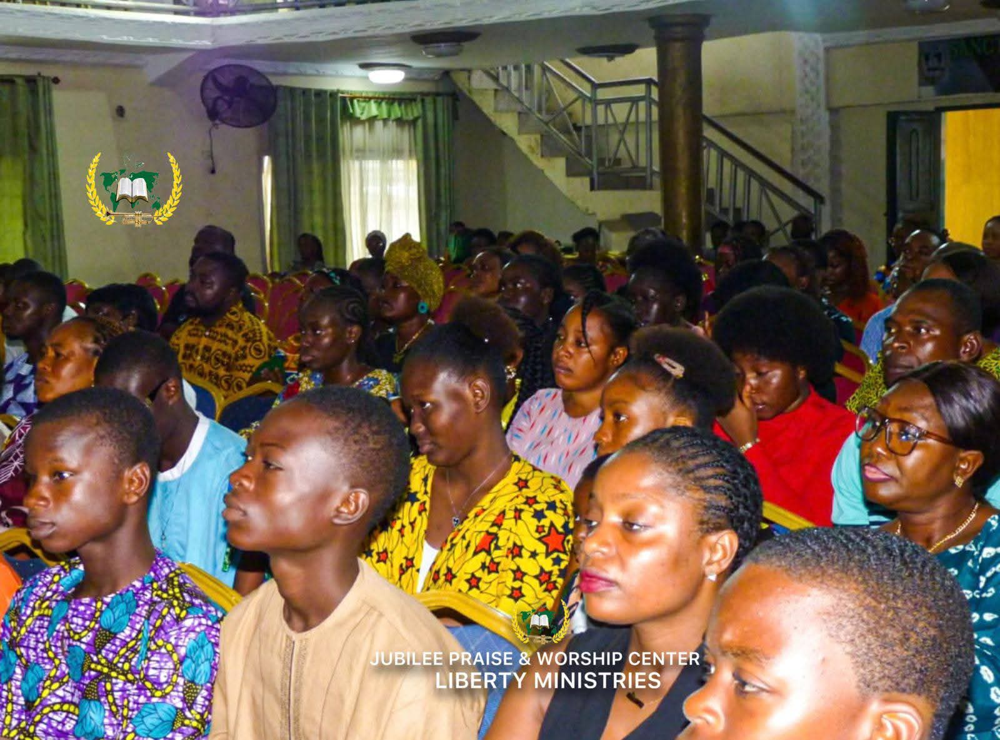

Pastoral Training
Preparing pastors and ministers with strong theological foundations and practical ministry skills.
 

Leadership Development
Raising leaders equipped to serve with integrity, vision, and excellence in church and society.
Discipleship & Evangelism
Training believers to deepen their walk with Christ and effectively share the gospel with others.